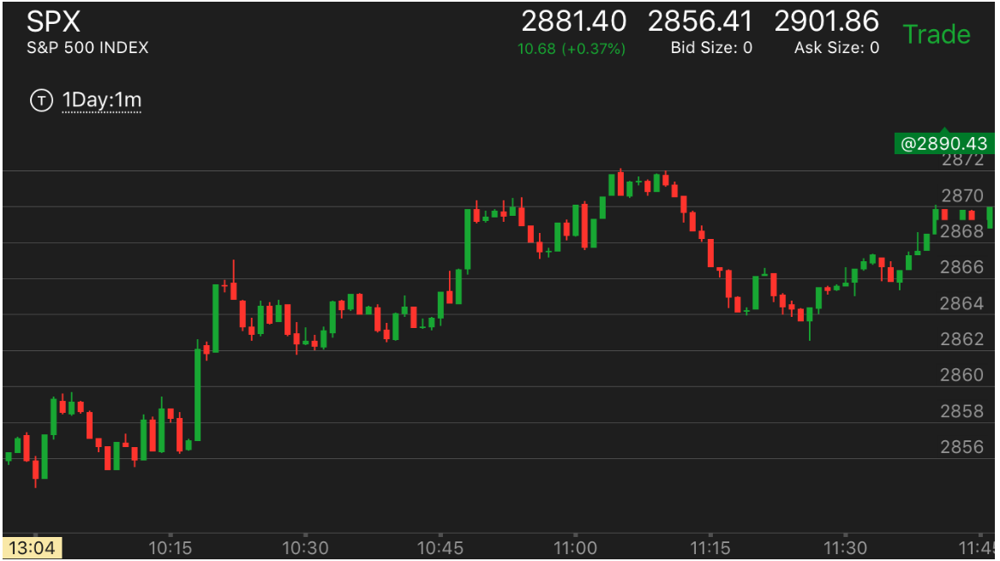

主要走势发生回调的位置
- 这个遵守相对论的时间和幅度原则。它回调的位置常常恰好高于主要走势的速度。比如上涨的时候，它下跌的位置
恰好高于上涨同样幅度所需要的时间，然后停止。这时常常会有一个小的两段走势。第二段非常的小。
- 回调的时候，如果发生的时候正常的两段走势，即使第二段非常小，但是它回调的速度超过下跌的速度，那么这个走势一旦反转
就会持续下去。而如果发生反常两段走势，第二段非常小，但它回调的速度超过下跌的速度。那么这个走势反转后，
还会有一些反复。虽然最后会超过原来的高点。
上涨中出现了两段下跌回调位置
刚刚开盘出现的回调位置
上涨中出现了两段下跌回调位置
TOP

图示:这是一个上涨的主要走势，它在11：10开始回调，虽然看起来很慢，但是它连续不断
的回调和上涨的速度相比，快了很多。因为上涨的时候，出现了长时间的走平。11：18出现了快速上涨，这个就是第二段下跌的开始。
但是它的第二段非常的小。但是因为调整很大。这个走势就结束了。开始上涨了。
刚刚开盘出现的回调位置
TOP
如果开盘出现了一个或者几个比较大的bar，然后连续反弹超过这个bar，只要出了两段走势，就可以认为是个
主要走势的回调结束了。继续主要走势。

图示：这个发生在刚刚开盘，它在开盘前发生了什么并不知道，可以看看开盘前的走势。但是
从这里看出，它第一个bar下跌，然后三个bar连续上涨。这样可以假定开盘处于跌势，这个上涨属于回调，它高于开盘点，
这样就完成了回调。然后出现了一个小的两段走势。这个两段走势的第二段很小。然后大盘继续大跌。

图示：这个发生在刚刚开盘，它在开盘前发生了什么并不知道，可以看看开盘前的走势。但是
从这里看出，它第一个bar下跌，然后三个bar连续上涨，超过了开盘点。关键要超过开盘点，如果是低于就走平，那么就是别的走势了。
这样可以假定开盘处于跌势，这个上涨属于回调，它高于开盘点，
这样就完成了回调。然后出现了一个小的两段走势。这个两段走势的第二段很小。然后大盘继续大跌。

图示：这个走势开始也一个大的bar，但是反弹不到开盘点，就开始走平了。这样就是可以认为，
第一个bar是前面走势的结束，这个是开始反弹了。结论完全相反。